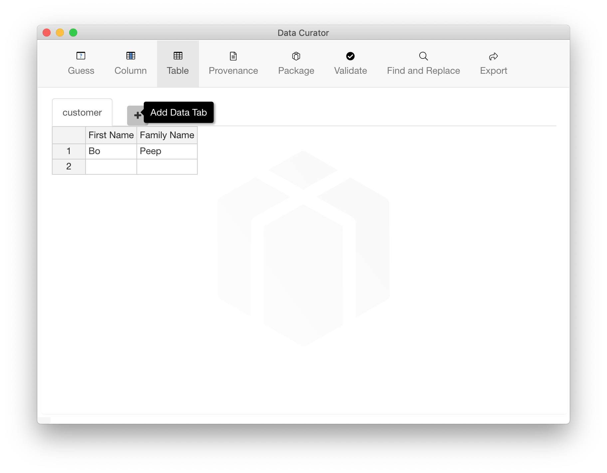

Create new data
Using Data Curator you can create one or more related data tables. A may have more than one data table to:
- publish similar data, e.g. time-series data with a table for each month
- provide a list of codes in one table to validate data in another table by using Foreign Keys
Create new data
When you open Data Curator, a new empty table is opened in a tab ready for you to enter data. Just start typing. Use the Tab key to move to the next column. Use the Enter key to move to the next row. There are many tools and keyboard shortcuts to help you edit the data.
Add a data table
To add an empty data table in a new tab, either:
- Choose File > New, to create another data table in a new tab.
- Move the pointer to the right of the last data tab and click the symbol.
- Move the pointer to the right of the last data tab and click the symbol.
- Move the pointer to the right of the last data tab and click the symbol.
